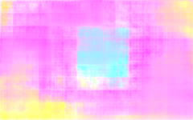

Documentation pour Flownet
Avant de commencer à implémenter et tester le réseau, nous avons commencer par nous documenter sur le réeseau et comment fonctionne t-il. Nos sources sont citées dans la bibliographie.
Généralités
Le but de cette section est d’introduire des notions générales afin de mieux comprendre FlowNet.
Définitions utiles
Dans cette section nous définissons des termes retrouvées très souvent dans d’autres parties. Il serait peut-être intéressant de lire une première fois ces définitions puis d’y revenir souvent en lisant le reste de la documentation.
Canal (ou "feature map") :
Classiquement, le canal est une des trois images élémentaires qui composent une image couleur (voir illustration ci-dessous). Néanmoins, en traitement d’images (et notamment dans notre cas) il est possible d’étendre la définition de canal. Un canal est alors une couche de l’image apportant des informations sur celle-ci (donc pas nécessairement la couleur). Par exemple, un canal peut représenter les contours de l’image, un autre peut représenter les zones lumineuses de l’image... En général, un canal représente une caractéristique de l’image. Dans un CNN, en pratique, un canal est une matrice. Les canaux peuvent aussi être appelés patch.

Canaux d’une image
- Coarse feature : Un canal à l’intérieur du réseau qui contient les informations de l’image de manière "grossière" (coarse en anglais) avant le produit rendu par le réseau.
- Pooling : Une étape dans les réseaux de neurone type CNN où la taille des features sont réduites petit à petit pour extraire les données voulues.
- Unpooling : Après le pooling consiste à augmenter la taille des canaux pour retrouver une image avec une bonne résolution.
- Upconvolution : Une sorte d’unpooling qui consiste a un upsampling (augmentation de la taille de la feature) puis une convolution.
- Bed of nails : Une méthode d’upsampling qui augmente la taille d’un canal en gardant la donnée en haut a gauche et place des zéros autour (en bas et à droite).
- Frame pairs : La paire d’images où on cherche a établir le flux optique.
- Ground truth : Dans notre cas le flux optique réel.
- Ground truth density per frame : Le pourcentage de l’image où on a le flux optique réel (si c’est à 50% la moitié de l’image n’a pas de données réelles).
- Stride of 2 : Une couche de convolution où le masque au lieu de se déplacer de "+1" position le masque se déplace de "+2" positions, ce qui divise la taille de moitié de la feature map.
- ReLU : Une fonction d’activation qui met à 0 des données dépassant un certain seuil (dans notre cas, qui sont négatives).
- End-to-end Point Error (EPE) : L’erreur standard pour l’estimation du flux optique où le flux optique estimé (pour un pixel donné : vest) est comparé avec les données GT (ground truth) (pour un pixel donné : vgt) et est calculée comme la distance euclidienne entre les deux vecteurs :
Pour calculer l’EPE d’une image entière, une moyenne est calculée sur tout les EPEs.
Flux optique
À partir des images avec la zone d’intérêt extraites grâce à Motion Vector Extractor (MVE), nous allons maintenant chercher à calculer le flux optique.
On considère l’application \( I \) qui quantifie l’intensité lumineuse d’un pixel dans une des images (en faisant la simplification que l’image est en nuances de gris par exemple). L’intensité lumineuse d’un pixel de coordonnées \( (x, y) \) à l’instant \( t \) est donc donnée par \( I(x, y, t) \).
Dans la suite de cette partie, on cherche à déterminer le flux optique entre 2 images successives séparées d’un délai de \( dt \).
Premièrement, il est nécessaire de faire l’hypothèse d’illumination constante, qui consiste à dire que :
Par ailleurs, on peut appliquer la formule de Taylor à l’ordre 1 sur \( I \) pour \( dx, dy, dt \) proches de 0 :
Or, d’après l’hypothèse d’illumination constante, on obtient :
En divisant par \( dt \) (non nul), on a :
On peut définir le vecteur de flux optique au point \( (x, y) \) à l’instant \( t \) qui correspond au vecteur \( \mathbf{u} = \left( \frac{dx}{dt}, \frac{dy}{dt} \right) \). Ce dernier peut être vu comme le vecteur vitesse du point image \( (x, y) \) à l’instant \( t \).
On peut interpréter le flux optique entre 2 images successives comme étant l’ensemble des vecteurs vitesses à l’instant \( t \) associés à chaque point image. Plus généralement, dans une vidéo, on peut considérer que le flux optique est la vitesse de chaque point image (fonction à 2 composantes) en faisant l’hypothèse de l’illumination constante.
Définition CNN
Un CNN est un cas particulier de réseau de neurones. En effet, il présente comme les autres réseaux une couche d’entrée (qui correspondra à l’image d’entrée) et une couche de sortie (qui correspondra en général à une couche de classification)[^1]. Les CNN présentent 3 types de couche : les couches de convolution, les couches de pooling et les couches entièrement connectée (FC)[^2]:
-
Les couches de convolution ont une architecture de sortie que la propagation du signal au travers de cette couche effectue un produit de convolution avec celui-ci. La sortie de cette couche correspondra au produit de convolution entre la sortie de la couche précédente et un masque de convolution correspondant aux poids neuronaux (associés aux connexions neuronales entre la couche précédente et la couche de convolution).
-
Les couches de Pooling servent essentiellement à réduire la taille de l’image entre 2 couches de convolution. Cela permet de réduire la complexité du réseau et de le rendre ainsi utilisable en pratique. On parle souvent de max-pooling car on utilise en général une fonction qui prend le maximum de l’intensité du voisinage d’un neurone/pixel.
-
Les couches FC sont en général à la fin du réseau pour "interpréter" les "features maps" ou cartes caractéristiques de l’image obtenues après la succession de couches de convolutions et de pooling. A la suite de ces couches on obtient une sortie qui en général (ce n’est pas le cas de FlowNet) classe quelque chose dans l’image de départ (comme des chats par exemple).
Finalement, on notera que la force des CNN pour le traitement d’image (par rapport aux réseaux classiques) semble être cette astuce de limiter le nombre de paramètres entre chaque couche de convolutions. En effet, si on souhaite faire du traitement d’image avec un réseau naïf de neurones (avec que des couches FC), le nombre d’entrées étant très grand pour une image, le nombre de paramètres entre chaque couche exploserait. Tandis qu’avec un CNN, si on choisit des noyaux de convolution 3x3, on se limite à 9 paramètres pour chaque couche de convolution ce qui réduit drastiquement la complexité du réseau.
[^1]: FlowNet, lui, n’est pas un classifier, sa sortie correspond bien à une image c’est une différence significative par rapport aux CNN classiques. [^2]: FlowNet semble remplacer ces couches par l’étape de "refinement" (voir la figure 1 plus bas) pour obtenir une image en sortie plutôt qu’une classification.
Apprentissage
Descente de gradient :
Dans le cas de FlowNet, l’apprentissage par descente de gradient se fait (sur une couche) sur une matrice w des poids en fonction de "vecteurs" de pixels[^3].
Avec α un réel le learning rate et pour l’itération n, on a la formule :
J étant une fonction de mesure de l’erreur avec comme données d’entraînement {(x(i), y(i))}i ∈ {1,...,m}; m le nombre de paire de données, où x(i) la donnée d’entrée et y(i) le flux optique réel ("GT"):
h étant la fonction qui associe à x(i) le flux optique prédit par le réseau :
Ainsi, avec x*(i) = [1, x(i)] pour prendre en compte w0 :
La descente de gradient peut être utilisée de 3 manières différentes :
- batch : on utilise toutes les données de la data d’entraînement dans une matrice, et on calcule le gradient sur toute les données mais cela ralentit l’apprentissage.
- stochastique : on sélectionne une donnée aléatoire à la i-ème itération en pensant que cette donnée fiable ressemble à toute les autres[^4]
- mini-batch : on sélectionne de manière aléatoire une partie des données d’entraînement[^5]
Probleme de l’underfitting et de l’overfitting :
A partir de l’apprentissage par descente de gradients stochastique ou en mini-batch, le problème de l’underfitting et l’overfitting est liée au nombre d’itérations effectué pour entrainer le réseau. En effet, l’underfitting est le fait de ne pas assez entrainer le réseau alors que l’overfitting entraîne "trop" le réseau et alors perd sa capacité à généraliser.
Pour faire face à ce problème, il existe différentes méthodes. Dans le cas de FlowNet, ils ont utilisé un "validation set" qui teste a chaque itération quels sont les meilleurs poids à garder.
Finalement, le fine-tuning permet de "spécialiser" un réseau de neurones sur un jeu de données précis après qu’il ai été complètement entrainé avec le nombre d’itérations optimal trouvé lors de l’entrainement.
Backpropagation :
Le principe de backpropagation permet d’entrainer un réseau de neurone avec plusieurs couches. Cela consiste à calculer la sortie avec les poids existants au temps t puis changer les poids en partant de la fin et en se basant sur le principe (avec z(x, y), x(s) et y(s))[^6] :
Algorithme d’Adam :
L’algorithme d’ADAM est un algorithme qui modifie le learning rate pour optimiser l’apprentissage dans la méthode de descente de gradient. Pour essayer de comprendre l’algorithme, nous allons expliciter les optimisations faites de manière temporelle :
- AdaGrad : La première optimisation a été de diminuer le learning rate en fonction du temps et du gradient (et ainsi de prendre en compte le fait que l’algorithme converge vers la solution). Nous avons donc, avec δ une valeur pour ne pas diviser par 0, ε le learning rate de départ :
Cet algorithme a cependant un défaut : le learning rate ne fait que diminuer, de manière assez brutale, avec le temps.
- RMSProp : Pour ralentir la progression, une restriction a été mise sur r. Une moyenne logarithmique est faite entre le terme précédent et le terme rajouté :
- ADAM : La dernière optimisation est de prendre en compte le moment (s), qui est une variable qui permet de ne pas tomber dans un minimum local et de chercher le minimum global. Mathématiquement, c’est une variable qui change en fonction du gradient au premier ordre (plus le gradient est grand, plus le moment est grand et plus le learning rate est élevé).[^7]
[^3]: "Since, in a sense, every pixel is a training sample" dans l’article [^4]: Dans notre cas, ce n’est pas possible, ça voudrait dire utiliser qu’une seule "position" et pour le calcul de flux optique nous avons besoin de plusieurs pixels côte à côte [^5]: Pour FlowNet, ils ont pris 8 paires d’images comme taille pour une itération [^6]: avec FlowNet nous avons comme fonction d’activation ReLU [^7]: Le learning rate diminuant moins, dans le cas de FlowNet, on voit que l’algorithme est lancé plusieurs fois avec des learning rate différents
Flownet
Architecture de Flownet
FlowNet est un réseau de neurone qui n'a pas eu besoin d'un dataset réaliste pour avoir des résultats intéressants. Le réseau est capable de généraliser et il est même meilleur que certaines méthodes à la pointe (à ce moment-là) tel que Deepflow et Epicflow sur ses données d'entraînement. Le code source est disponible dans la bibliographie.
Pour calculer le flot optique, la taille des entrées et sorties étant très grande, les couches de pooling sont nécessaires pour la praticité du réseau de neurones. De plus, nous en avons besoin pour pouvoir agréger des parties de l'image en flux "globaux" optique. Faire du pooling réduit la résolution de l'image, nous avons donc une partie du réseau qui "pool", la partie contractive. Puis, la deuxième partie du réseau réaugmente la taille de l'image (pour pouvoir fournir le flot optique demandé), la partie expansive dite de "refinement". Ce réseau est entraîné en tant qu'une seule entité (pas d'entraînement différents entre les deux parties), par rétropropagation du gradient (nous en parlerons dans une autre section).
Partie contractive
FlownetSimple
Les deux images sont données dans la même entrée au réseau et il cherche "seul" la correspondance entre les deux images et le flux optique. Plus précisément, on "superpose" les deux images dans 6 canaux.
FlownetCorr
Les deux images ont un prétraitement où leurs caractéristiques sont extraites en coarse features dans deux "branches" indépendantes du réseau en parallèle puis sont regroupées.
Détails sur la correlation :
Les deux feature maps sont associées par partie (appelée patch) par une somme de produit scalaire appelée multiplicative patch comparison.
Pour comprendre comment ça fonctionne, regardons la formule d'une simple comparaison de deux patchs centrés sur la position x₁ dans la première map et x₂ dans la deuxième :
[ c : (w \times h) \times (w \times h) \rightarrow \mathbb{R} ] [ c(x_1, x_2) = \sum_{o \in [-k,k] \times [-k,k]} \langle f_1(x_1 + o), f_2(x_2 + o) \rangle ]
Ici les deux patchs sont de taille (2k + 1) × (2k + 1) et f₁ (respectivement f₂) représentent les données d'un pixel sur toutes les coarse features d'entrée de l'image 1 (respectivement de l'image 2), autrement dit, sur toute la profondeur de l'image en position x₁ + o ou x₂ + o. Ici, p représente le nombre de feature maps :
Si on cherche les correspondances pour tous les points de la première feature map avec la deuxième, le réseau ne sera pas entraînable. En effet, nous aurons trop de données à calculer. Aussi, deux pixels très loin l'un de l'autre avec la même intensité lumineuse pourraient correspondre alors que ce n'est pas ce que l'on veut. Nous pouvons avoir une image avec deux étoiles par exemple où le réseau pourrait déduire un flot optique entre les deux.
Pour pallier à ce problème, une limitation sur le décalage entre x₁ et x₂ a été mise en place (recherche de correspondance entre x₁ et x₂ seulement dans leur voisinage respectif). Le déplacement entre les deux feature maps a été mis en place en fonction de la limitation. Le voisinage autorisé est une fenêtre de diamètre D = 2d + 1.
La corrélation est de dimension 4 et pour chaque combinaison de position on a une valeur de corrélation. En pratique, le déplacement relatif est organisé dans D² canaux de taille w × h. Pour l'apprentissage, les derivatives sont implémentées en connaissant les données d'entrées.
Partie expansive
Upconvolutionnal layer : le principe est d'étendre (en largeur et hauteur) les feature maps à la fin de la partie contractive. Pour cela on fait un bed of nails et une convolution avec un masque de notre entrée (la fin de notre partie contractive), puis une concaténation avec des feature map de la partie contractive gardées en mémoire.
"we perform unpooling by simple 'bed of nails' upsampling, that is, replacing each entry of a feature map by an s × s block with the entry value in the top left corner and zeros elsewhere. This increases the width and the height of the feature map s times. We used s = 2 in our networks. When a convolutional layer is preceded by such an upsampling operation we can think of upsampling+convolution ('upconvolutio n')"
Les données sauvegardées des précédentes convolutions sont utilisées comme informations à ajouter sur les coarse feature maps de la fin de la première partie. Cette méthode permet de garder les informations des coarse feature maps (le "flot optique global") et des informations précises locales avec les niveaux précédents. Ils se sont arrêtés à une résolution de l'image (de sortie) de 96x128 pour un input de 384 x 512 (la taille est divisée par 4). Ce format donne déjà les informations nécessaires sur le flot optique et plus de couches dans la partie expansive n'améliore pas le résultat. Il realise une interpolation bilineaire avec la sortie pour avoir la bonne taille de l'image d'entrée.
Variante (+v) :
Le "coarse to fine scheme" est un algorithme qui permettrait de diminuer l'erreur d'un flux optique généré, par exemple, par un CNN et l'affiner. Ils expliquent qu'ils ont pris en compte le léger changement de couleur et de luminosité pour diminuer l'erreur. A partir de la sortie donnée du réseau de neurone, il ont utilisé le "coarse to fine scheme" pour augmenter la taille de l'image jusqu'à la taille initiale (sur 20 itérations) et affiner le flux (sur 5 itérations).
Entrainement
FlowNet étant novateur (à ce moment-là) et le flot optique étant compliqué à calculer avec des images réelles, trouver des données d'entrainement adaptées est difficile.
Détails sur les jeux de données existants :
- Middlebury : très petit nombre de données et de très petits mouvements
- KITTI : mouvements spécifiques avec un pourcentage faible (environ 50 pour cent) de données vérifiées sur le flit optique "GT" (les données sont réelles : elles ne sont pas générées artificiellement)
- MPISintel : nombre de données considérable, GT avec un pourcentage de 100 pour cent (de certitude) mais pas assez pour entraîner un réseau de neurone (base de données de synthèse)
Flying Chair Dataset :
Pour pouvoir entraîner le réseau, ils ont créé un jeu de donné, le Flying Chair Dataset. Ils ont choisi aléatoirement :
- des transformations affines en 2D sur le fond et sur les chaises pour les déplacements
- La taille, l'endroit où les chaises se placent
La distribution utilisée pour générer les données aléatoires est ajustée pour que les données soient similaires à celle de MPISintel. Les créateurs de Flying Chairs auraient pu apparemment générer plus de données pour le dataset mais se sont arrêtés à 22 872 paires d'image.
Data augmentation :
Pour éviter le problème de l'overfitting, la data augmentation a été utilisée sur :
- la translation
- la rotation
- la taille
- le bruit gaussien
- la luminosité
- le gamma
- le contraste
- la couleur
Les transformations ont été faites sur la paire d'images entière et entre les deux images de chaque paire (avec des modifications plus petites, les détails sont dans l'article).
Détails pratiques sur le réseau
FlowNet est composée de 9 couches de convolution. Parmi ces couches de convolution, 6 d'entre elles effectuent aussi du pooling avec la méthode du stride of 2 où la taille des feature maps est divisée par 2 et le nombre de feature maps est multiplié par 2. Un ReLU est présent après chaque couche de convolution. De plus, on peut avoir en entrée du réseau une taille variable entre les paires d'images car il n'y a pas de couches complètement connectées (FC).
FlowNetSimple :
Partie contractive :
| Numéro | Type de couche | Modification de taille | Canaux | Filtre |
|---|---|---|---|---|
| 1 | POOLING+CONVOLUTION | ½ + 10 × ½ + 10 | (x10+4) | 7×7 |
| 2 | POOLING+CONVOLUTION | ½ × ½ | x2 | 5×5 |
| 3 | POOLING+CONVOLUTION | ½ × ½ | x2 | 5×5 |
| 4 | CONVOLUTION | / | / | 3×3 |
| 5 | POOLING+CONVOLUTION | ½ × ½ | x2 | 3×3 |
| 6 | CONVOLUTION | / | / | 3×3 |
| 7 | POOLING+CONVOLUTION | ½ × ½ | x2 | 3×3 |
| 8 | CONVOLUTION | / | / | 3×3 |
| 9 | POOLING+CONVOLUTION | ½ × ½ | x2 | 3×3 |
Partie expansive : 4 couches d'upconvolution.
FlowNetCorr :
FlowNetCorr a la même architecture, mais, avec une "couche de corrélation" en plus entre la couche numéro 3 et 4 et les paramètres k = 0, d = 20, s₁ = 1, s₂ = 2.
L'algorithme Adam a été utilisé pour l'entraînement. C'est l'algorithme utilisé car le réseau a une convergence plus forte que la descente de gradient stochastique. Ils ont pris comme paramètres : B1=0.9 et B2=0.999 et λ = 10⁻⁴ ("learning rate"), pour des mini-patches de 8 paires d'images. Le learning rate est ensuite diminué à partir d'un certain moment pour affiner l'entraînement. Flownet-Corr a en revanche un problème de "gradient explosif". Pour pallier à ça, le learning rate est plus faible au début, puis, augmente jusqu'à 10⁻⁴. Une fois une certaine stabilité obtenue, la procédure d'avant (pour FlowNetS) est utilisée.
Remarque 1 :
L'upscaling est une méthode pour augmenter les dimensions d'une paire d'images (ça "augmente" les images) avant traitement par le réseau. L'article indique que cette technique est intéressante pour avoir de meilleurs résultats.
Fine-tuning (+ft) :
Les données MPISintel ont été utilisées pour le fine-tuning avec un learning rate très faible pour un nombre d'itérations optimal obtenu empiriquement (pendant l'entraînement).
Résultats dans l'article
FlowNet est testé sur Sintel, Kitti, Middlebury et Flying chairs. Pour pouvoir comparer les données, ils utilisent le average end-to-end point error (erreur standard pour l'estimation du flux optique) ce qui correspond à la distance euclidienne entre, le flux trouvé et le véritable flux, moyennée sur tous les pixels. Plus le chiffre (EPE) est faible, plus le résultat de FlowNet est proche de la réalité et plus on peut considérer que FlowNet est performant.
En général, on peut observer que FlowNet n'est pas le plus performant sur les données de test par rapport à ses adversaires EpicFlow, DeepFlow,... (voir par exemple les tests sur les dataset SintelClean, Sintel Final ou KITT). Néanmoins, les concepteurs de FlowNet considèrent que leur réseau est le plus efficace en termes de performances relativement au temps d'exécution. On peut noter que FlowNet est le meilleur réseau sur le dataset Chairs (en considérant les données de test). Ce résultat peut s'expliquer par le fait que FlowNet a été entraîné sur le même dataset (mais sur d'autres données que celles du test). Concernant le dataset Chairs, la version corr de FlowNet (FlowNetC) est un peu plus performante que FlowNetS. Mais, sur d'autres dataset (notamment avec KITTI), la tendance peut s'inverser à cause du fait que les mouvements sur ces datasets peuvent être plus grands/amples. De même, FlowNetS semble être meilleur que FlowNetC lorsqu'il y a des mouvements constants et larges dans l'image comme du brouillard ou des nuages (voir dataset SintelFinal qui en contient). Finalement, FlowNet a une certaine capacité de généralisation entre l'entraînement et de nouvelles données utilisées pour les tests.
Remarque 2 :
Expérimentalement, les concepteurs de FlowNet se sont rendus compte de l'importance du nombre de données dans leur dataset : il doit être élevé sinon les résultats ne sont pas satisfaisants.
Remarque 3 :
D'après ses concepteurs, FlowNet semble être performant pour détecter les "détails" sur les images.
Remarque sur FlowNet2
Le but de l'article de FlowNet2 est d'optimiser au maximum l'EPE de FlowNet1 en explorant différents changements. FlowNetCorr a été réentrainé et donne de meilleurs résultats avec l'entraînement spécifié dans le deuxième article sur FlowNet avec les datasets Flying Chairs et Flying Thing 3D. Aussi, différentes architectures ont été testées où l'architecture "de base" de FlowNet a été dupliqué et "concaténé" avec diverses changements.